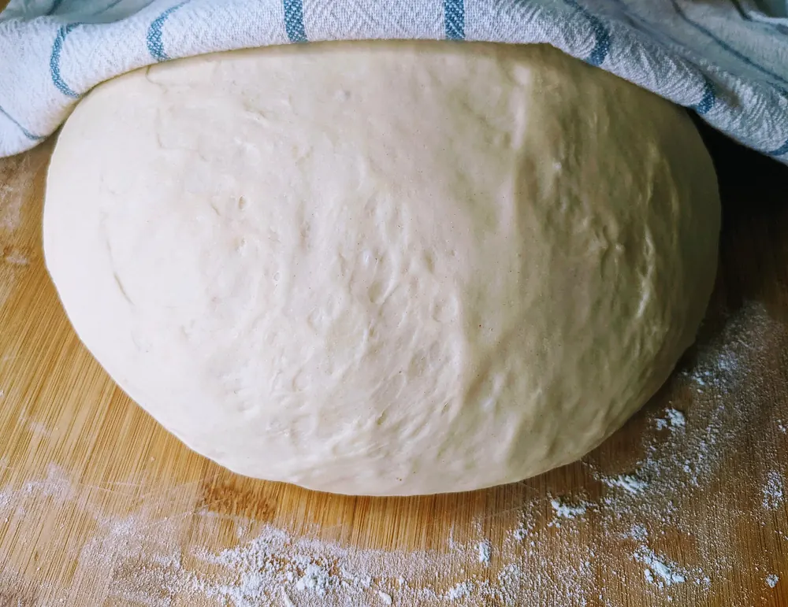
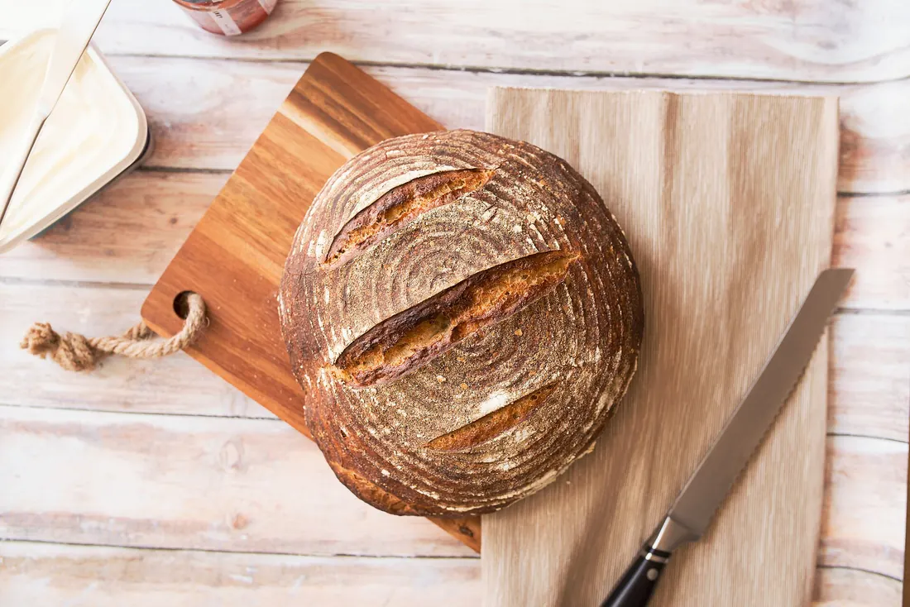
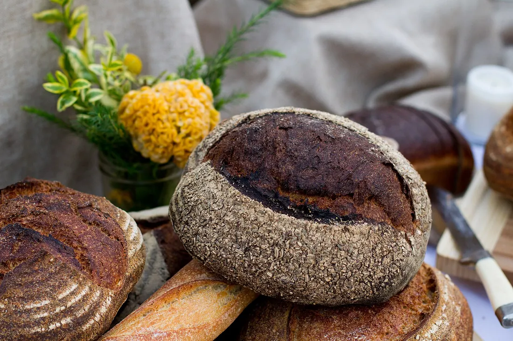
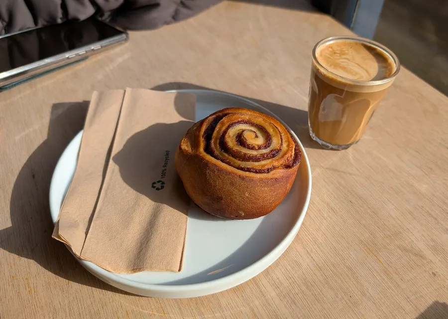
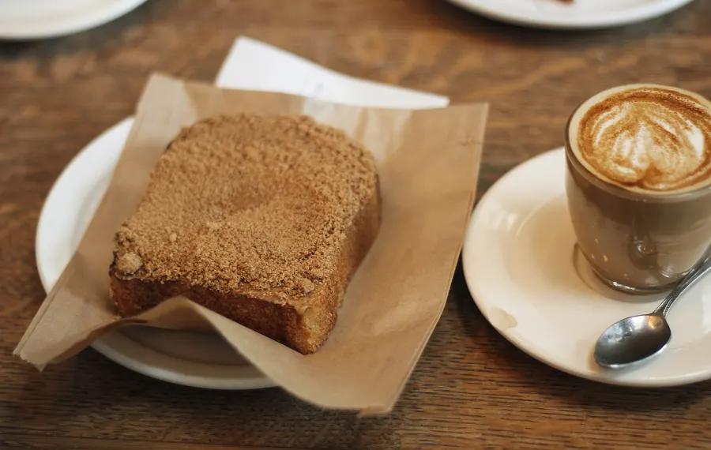

Mix, then leave it alone
Dough is mixed in the afternoon and folded four times over three hours. After that, time does the work.

Open Tuesday to Sunday
Sourdough, rye and pastry from a small bakery on East Main Street in Norman.
From the baker
Sam Whitley, baker and owner
“If the bread isn't right at four in the morning, it doesn't go on the shelf. That's the whole rule.”
I started baking bread for the Saturday market, twelve loaves at a time in a friend's restaurant oven after they closed. People kept asking where they could get it on a Tuesday. Eventually the answer was this room on East Main.
We still bake the way we did then. The sourdough is flour, water, salt and a starter that's older than the shop. Every loaf rests overnight, so it's ready when the ovens come on at half past three.
We make a set amount each morning and stop when it's gone. That means some days you'll miss the cardamom buns. It also means nothing on the counter is from yesterday.
The coffee comes from a roaster up the road, the butter from a dairy an hour north, and the wheat for our red wheat loaf is grown and milled in Oklahoma.

The process
There's no shortcut we'd want. Slow fermentation is where the flavour comes from, and why the crust stays crisp for days.

Dough is mixed in the afternoon and folded four times over three hours. After that, time does the work.

Shaped loaves rest in their baskets for twelve to fourteen hours. The long, cold proof gives the crumb its tang.

Bread first while the oven is hottest, pastry after. The first loaves are cool enough to slice when the doors open.
This season
A few things we only make while the weather's cool. Ask at the counter, or call by 9 and we'll put one aside.

Our cinnamon roll, made with browned butter and dark sugar. Saturdays and Sundays.

Sour cream coffee cake with a thick brown sugar crumb. By the slice, every day.
Cakes & catering
Tell us the date, how many people and anything we should know. We reply the same day with a price.

Letters
Sample reviews, for this example site.
“The seeded rye is the best bread I've had since I moved to Norman. I go Saturday before eight or I don't get one.”
“Ordered a pastry box for a staff meeting with a day's notice. Everything was still warm at seven.”
Visit
412 E Main St, Norman, OK 73069
On East Main, a short walk from downtown. Street parking out front, a bike rack by the door, and three tables by the window.
| Monday | Closed |
|---|---|
| Tuesday – Friday | 6 am until sold out |
| Saturday | 6 am until sold out |
| Sunday | 7 am until sold out |
We usually sell out around 1 pm. Call ahead and we'll hold a loaf with your name on it.